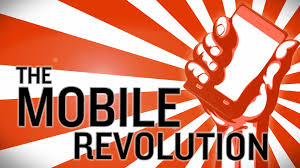
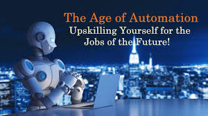
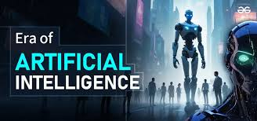

Technology 1.0: The Industrial Revolution
The first wave of technology evolution began with the Industrial Revolution, characterized by the invention of steam engines and mechanized manufacturing processes.
Technology 2.0: The Digital Age
Technology 2.0 introduced the world to computers, the internet, and digital communication, revolutionizing how we live and work.
Technology 3.0: Mobile Revolution
With the advent of smartphones and mobile apps, the world became more connected than ever before.
Technology 4.0: The Age of Automation
Automation and AI began reshaping industries, bringing advanced robotics and data analytics to the forefront.
Technology 5.0: The Era of Intelligence
Technology 5.0 focuses on blending AI with human-centric innovations, emphasizing sustainability, personalization, and seamless integration into daily life.